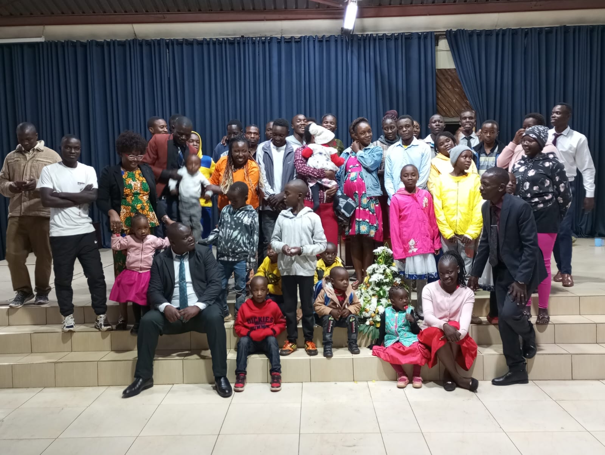
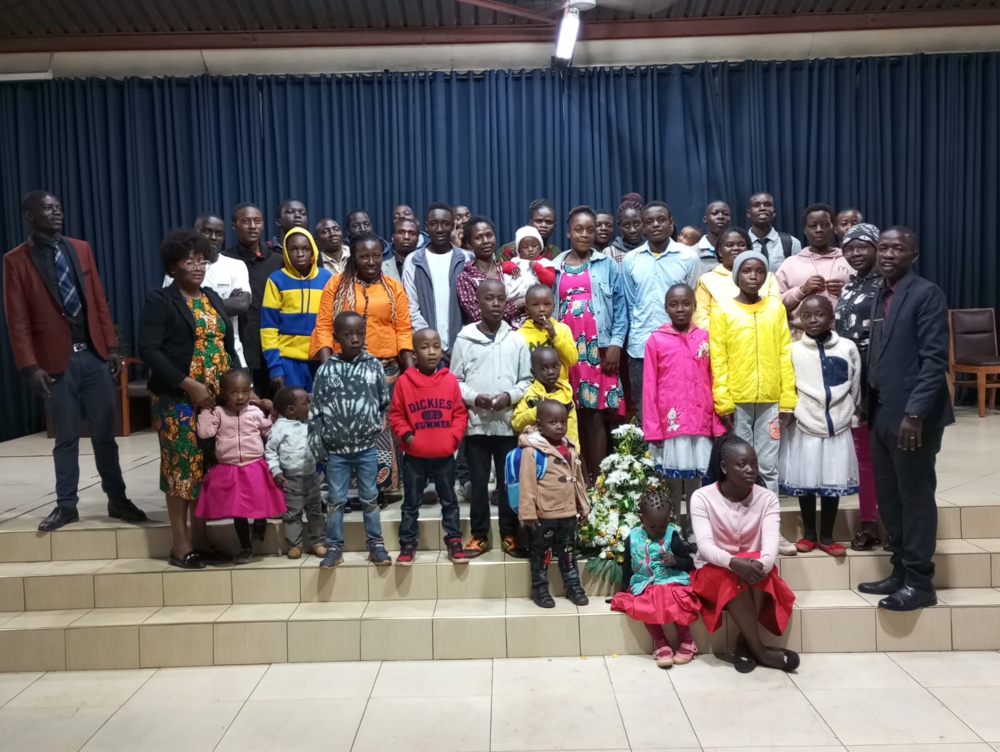
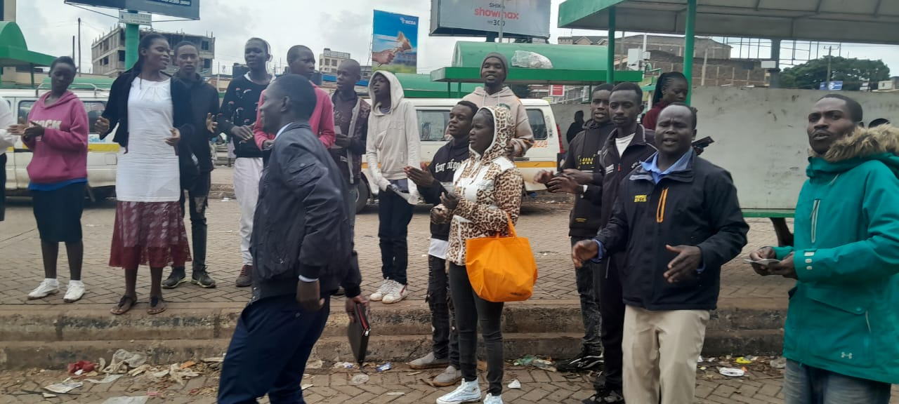

Weekly Services

Sunday Morning Service
Our main worship service featuring contemporary praise, Biblical teaching, and children's church
- 🎵 Spirit-filled worship
- 📖 Biblical preaching
- 👶 Children's ministry available

Sunday Evening Service
An intimate evening of worship, prayer, and deeper Biblical study
- 🙏 Focus on prayer
- 📚 In-depth Bible study
- 🤝 Fellowship time

Midweek Service
Recharge your spiritual life midweek with worship and teaching
- ⚡ Spiritual refreshing
- 🎓 Bible teaching
- 💪 Life application
Special Services
Prayer Meeting
Start your day with powerful intercessory prayer

Youth Service
Dynamic worship and teaching for young people

Home Fellowship
Small group meetings throughout the week
What to Expect
Warm Welcome
Our greeters will help you feel at home from the moment you arrive
Worship
Contemporary and traditional worship songs led by our worship team
Message
Biblical teaching that is relevant to daily life
Fellowship
Time to connect with others and build relationships
Plan Your Visit
Location
We are located in the heart of Ngong Town
Map Location
What to Bring
- ✓ An open heart
- ✓ Your Bible (or use one of ours)
- ✓ A friend or family member